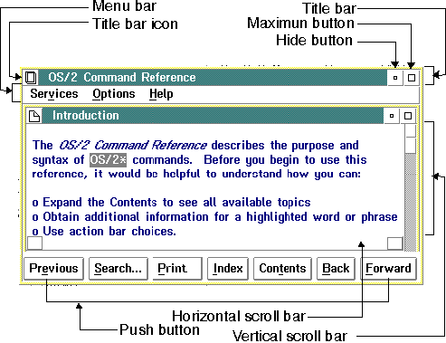

Unless special window characteristics are defined with IPF tags, the IPF compiler formats a window that includes the following elements:
The following figure shows a standard window and its elements.

Standard Window and Elements
The title bar icon, and the maximize and hide buttons allow a user to change the size and position of a window. The menu bar, push buttons, and scroll bars allow a user to work with the window's contents. The window title indicates the subject of the information, or name of the object, seen in the window.